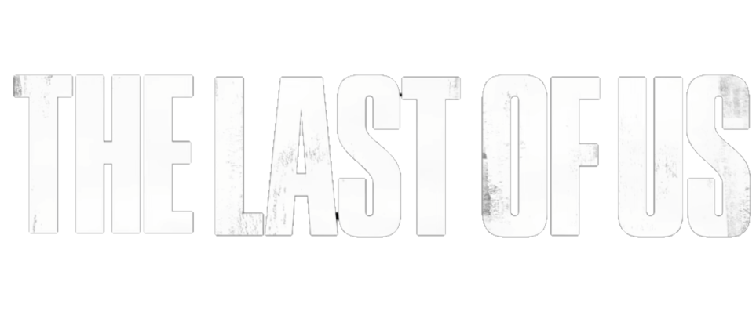

A HBO apresenta uma série pós-apocalíptica inspirada no aclamado videogame que segue a jornada brutal e angustiante de um homem cínico e uma garota de 14 anos enquanto cruzam os Estados Unidos, dependendo apenas um do outro para sobreviver.
X